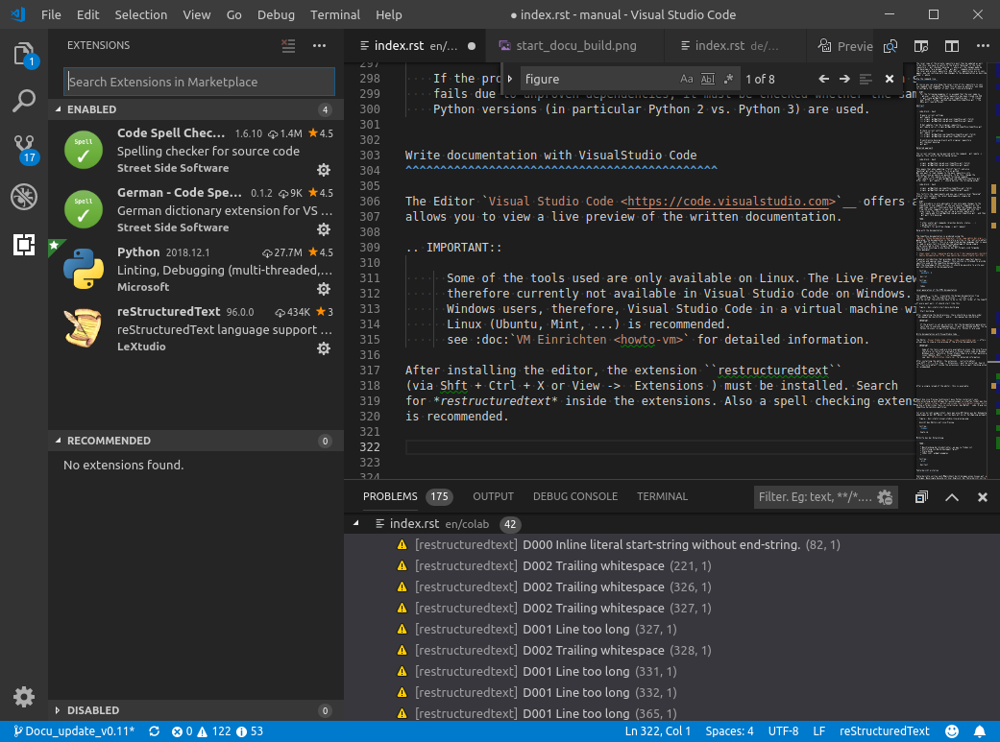

Vorsicht
Dies ist die Dokumentation des aktuellen Entwicklungszweigs der CometVisu. Es besteht daher die Möglichkeit, dass einige der hier beschriebenen Features mit dem aktuellsten Release der CometVisu nicht genutzt werden können.
Einrichten einer VM mit Visual Studio Code¶
Einige der verwendeten Tools zur Generierung der Dokumentation stehen nur unter Linux zur Verfügung. Die Live Preview funktioniert daher in Visual Studio Code unter Windows derzeit nicht.
Nachstehend wird für Windows Anwender Schritt für Schritt erklärt, wie man eine Virtual Machine mit Ubuntu erstellt und darin Visual Studio Code inkl. lauffähigem Live-Preview für rst-files einrichtet. Schwerpunkt ist die Konfiguration der Linux Umgebung und nicht die Einrichtung der VM, dafür gibt es zahlreiche gute Beschreibungen im Internet.
Vorbereitung der Virtual Machine¶
- Den kostenlosen VMware Player von vmware.com herunterladen und installieren. Natürlich sind auch alle anderen Player für Virtual Machines möglich, die nachfolgende Beschreibung bezieht sich aber teilweise auf den verwendeten VMware-Player.
- iso-Image von Linux downloaden. Dieses kann zB. im Download-Bereich von https://www.ubunutu.com heruntergeladen werden. Die aktuellste Desktop Version verwenden (nicht die LTS-Version).
- Ubuntu in VMware installieren: => Create New Virtual Machine. Danach das Ubuntu image auswählen und den weiteren Schritten folgen.
- VM konfigurieren. Dazu die Virtual Machine im linken Auswahlbereich selektieren und dann den Menüpunkt „Edit Virtual Machine Settings“ auswählen. Im Reiter Hardware dann ca. 2GB Speicher (bei 4GB physischen Speicher) zuweisen. Je nach Anzahl von CPUs zumindest die Hälfte der physischen CPU Kerne zuweisen (nicht mit der Anzahl an virtuellen CPUs verwechseln).
- Ubuntu in der VM starten: => Play Virtual Machine.
- Hinweise auf die VMware-tools ignorieren bzw. manuell installieren auswählen. Die vm-tools werden später als Paket installiert.
Für eine detailliertere Beschreibung zur Installation der VMware siehe zB. https://www.pcwelt.de/ratgeber/Tutorial_-_Mit_Vmware_Player_virtuelle_PCs_einrichten-Schritt_fuer_Schritt-8915132.html
Grundkonfiguration von Ubuntu¶
Die nächsten Schritte werden im Terminal-Fenster ausgeführt. Dieses kann mit Ctrl-Alt-T geöffnet werden. Mittels Rechtsklick kann das Terminal mit „Lock to Launcher“ am linken Toolbar fix angeheftet werden.
Mit
sudo dpkg-reconfigure keyboard-configurationdas Tastaturlayout auf Deutsch umstellen. Im Untermenü Generic 105-key keyboard auswählen, dann mit den Cursor-Tasten auf OK navigieren/bestätigen und dann auf der nächsten Seite die Sprache Deutsch auswählen.VMware tools mit
sudo apt-get install open-vm-toolsinstallieren. Die VMware tools sind notwendig um zB. Anpassung der Bildschirmgröße an die Fenstergröße, Copy-Paste zwischen Host und VM etc. zu aktivieren. Nachdem das Paket installiert ist, die VM herunterfahren und neu starten.Visual Studio Code installieren. Dazu Firefox vom linken Toolbar aus öffnen und auf https://code.visualstudio.com/download wechseln. Mit der Schaltfläche .deb das Paket auswählen und im Dialogfester die Option „Open with Software install (default)“ wählen. Nach dem Download erscheint das Ubuntu Software Center, wo noch die Schaltfläche „Install“ gedrückt weden muss.
Hinweis
Sollte wie in meinem Fall die Installation auf diesem Weg nicht funktionieren, das Paket mit der Option „Speichern“ herunterladen und mit folgendem Befehl
sudo dpkg -i code_1.17.1-1507645403_amd64.debinstallieren.Als nächstes git mit
sudo apt-get install git-allinstallieren und User/E-Mail richtig konfigurieren. Die Befehle dazu sindgit config --global user.name="Max Mustermann"bzw.git config --global user.email="Max.Mustermann@abc.com".Visual Studio Code öffnen. Dazu am einfachsten VSCode in der Suche eingeben, „Visual Studio Code“ auswählen und für die Zukunft am Launcher hinzufügen.
Am „Welcome“ Bildschirm von VS Code „Clone Git Repository“ auswählen. Danach muss der Link auf den eigenen Fork auf Github eingefügt werden. Das default Verzeichnis bestätigen und nach dem Herunterladen „Open Repository“ bestätigen. Zum Thema github (user anlegen, Fork erstellen, etc. ) bitte den Abschnitt Allgemeine Vorbereitungen in der Dokumentation beachten.
Im VS Code Editor die Extension
restructuredtextinstallieren. Dazu über den Menüpunkt Anzeigen -> Extensions suchen -> „restructuredtext“ eingeben und dann „install“ wählen. Zusätzlich wird noch eine Spell checking Extension empfohlen.Install extensions¶
Nach einmaligem Neuladen des Editors steht diese zur Verfügung.
Hinweis
Auf die Installation von Python wird hier nicht näher eingegangen, da Python auf Ubuntu (und den meisten anderen Linux Distributionen) bereits vorinstalliert ist.
Python pip installieren, da damit weitere Python Tools für die Entwicklungsumgebung installiert werden müssen. Dazu im Terminal-Fenster zuerst
sudo apt-get update && sudo apt-get -y upgradeausführen, um alle installierten Pakete auf Letztstand zu bringen. Dies kann bis zu 30min dauern. Danachsudo apt-get install python-pipausführen.Im Cometvisu Ordner (in das git das repository gespeichert hat)
sudo -H pip install -r utils/requirements.txtausführen. Damit werden alle erforderlichen Pakete installiert.Visual Studio Code wieder öffnen. Falls das CometVisu-Projekt nicht mehr geöffnet ist, mit „File -> Open Recent“ wieder öffnen.
Ist alles korrekt eingerichtet, kann man eine RST-Datei aus der Dokumentation öffnen und mit Strg+Shift r das Live-Preview
Fenster öffnen. Änderungen an der RST-Datei, sollten dann mit kurzer Verzögerung automatisch in Preview Fenster zu sehen sein.
Je nach verfügbarer Rechnerperformance kann es notwendig sein, das Aktualisieren des Previews einzuschränken. Unter Einstellungen (Symbol in VS Code links unten) -> Settings wählen. Es öffnet sich eine Datei „User Settings“. Im Suchfeld „restructured“ eingeben. Es erscheinen dann die vorhandenen Einstellungen der Extension RestructuredText.
Die folgenden Parameter stehen per default auf „onType“ bzw. „true“. Mit folgenden Einstellungen wird das Preview nur mehr beim Speichern der aktuellen Datei und erneutem Aufrufen des Previews aktualisiert:
// Whether the linter is run on save or on type or disabled.
"restructuredtext.linter.run": "onSave",
// Flag to control whether text changed event triggers preview update.
"restructuredtext.updateOnTextChanged": "false",
Dazu die beiden Parameter in der Datei settings.json im Cometvisu Projekt (Verzeichnis .vscode) einfügen. Danach die Datei speichern und Visual Studio Code neu starten.
So sollte am Ende Visual Studio Code mit dem Live Preview eines rst-Files aussehen:

Ansicht des Editors mit Live-Preview¶